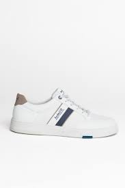
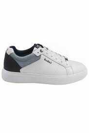
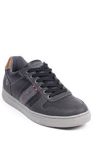
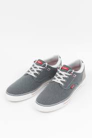
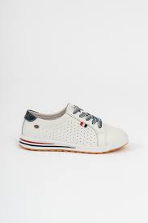
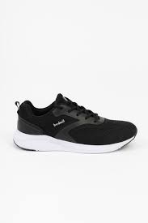
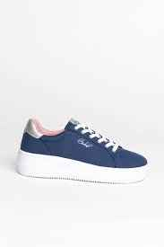
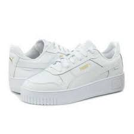
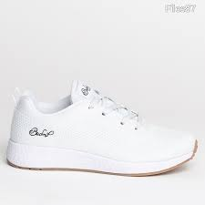
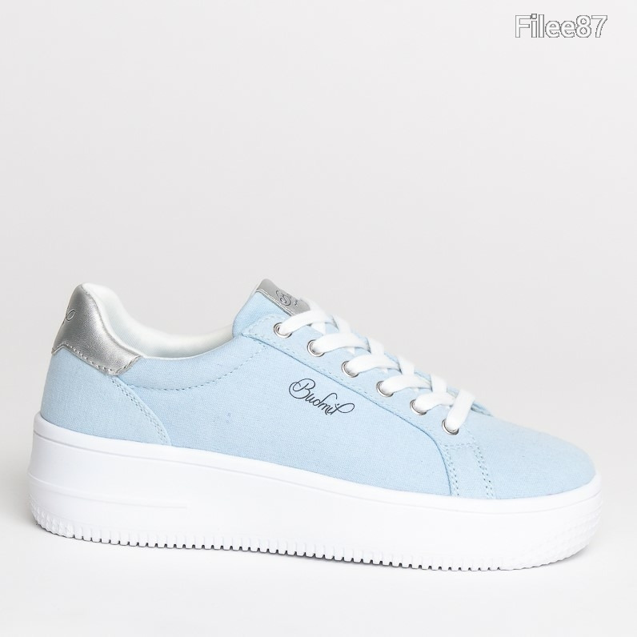

Kedves Vásárlóink!
Cipők
Minden féle budmil cipő megtalálható nálunk,ami önnek csak tetszik,vagy családjának.
1990-ben Budmil Kft. néven indult a cég, amely már részvénytársaságként működő vállalkozás. Egyik alapító tagja és ügyvezetője Hegedüs Vilmos, aki keménykezű vezetéssel alapozta meg a vállalatát. A cég egykor a harmadik volt a rendszerváltás korabeli magyarországi sportruházati márkák rangsorában.[forrás?] Bár központja Magyarországon van, a gyártást Távol-Keletre szervezte ki [2]. A cég sikerét a tőkeerős nyugati konkurens márkák között a hazai hiánygazdálkodás piaci rései felismerésének, a megbízható minőségnek és a jól felépített imázsnak köszönheti.
A cég elsősorban divatos utcai ruházattal foglalkozik, de jelentős szerepe van a kínálatban a táskáknak és a cipőknek is.
|  |  |  |  |  |  |
|---|---|---|---|---|---|
| 18000ft | 16200ft | 13111ft | 14550ft | 6821ft | 85620ft |
női cipők
|  |  |  |
 |  |
 |
|---|---|---|---|---|---|
| 11000ft | 16550ft | 5567ft | 9999ft | 12340ft | 14444ft |